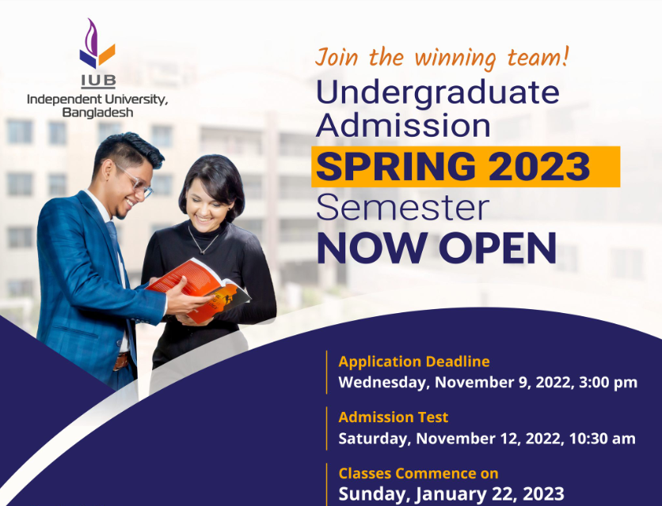

Session: Autumn 2024
Undergraduate Admission Test Click Here
SSC, HSC and Equivalent Aggregate GPA of 7.0 in secondary and higher secondary level, with a minimum GPA of 3.00 in each O Level, A level and Equivalent At least 5 subjects in O Level with a minimum GPA of 2.50 At least 2 subjects in A Level with a minimum GPA of 2.00 Other Equivalent Degrees International Baccalaureate or US High School Diploma Other 12-year equivalent degree (must have the equivalence certificate from the Ministry of Education)
Session: Autumn 2024
Graduate Admission Click Here
Admission to the program will be selective. To apply for admission, students must fulfill the criteria given below: Three-year Bachelor Degree from a reputed university and at least one year of work experience. or Four-year Bachelor Degree from a reputed university. Some work experience after graduation in a managerial/executive position is preferable, but not essential. A CGPA of at least 2.50 at the undergraduate or graduate level with no 3rd Division/Class in any previous public examination. Acceptable score in the IUB Admission Test or score of 500 in GMAT.